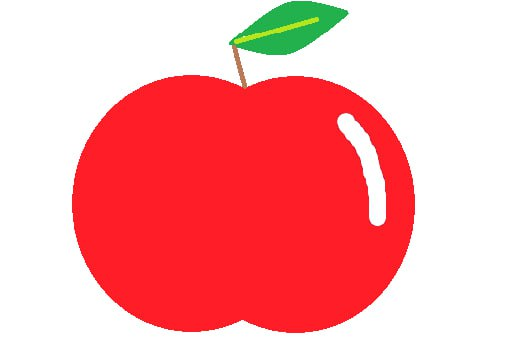

Традиційні рецепти з яблук
Яблука є невід'ємною частиною української кухні. Від класичної шарлотки до домашнього сидру — яблука використовуються у багатьох стравах. Цей фрукт додає не лише смаку, а й аромату, збагачуючи різноманітні рецепти. У пирогах і тістечках яблука поєднуються з корицею, горіхами та іншими інгредієнтами, створюючи чудовий десерт. Вареники з яблуками — традиційна страва, яку готують на свята та сімейні зустрічі. Яблука також використовують для приготування салатів, соусів і запечених страв, надаючи їм легкості та свіжості. Напої, такі як яблучний компот або сидр, роблять будь-який обід особливим. Багато українських господинь мають свої улюблені рецепти, які передаються з покоління в покоління, що робить яблука важливим символом домашнього затишку та традицій. Таким чином, яблука не лише смачні, але й активно впливають на культуру харчування в Україні.
